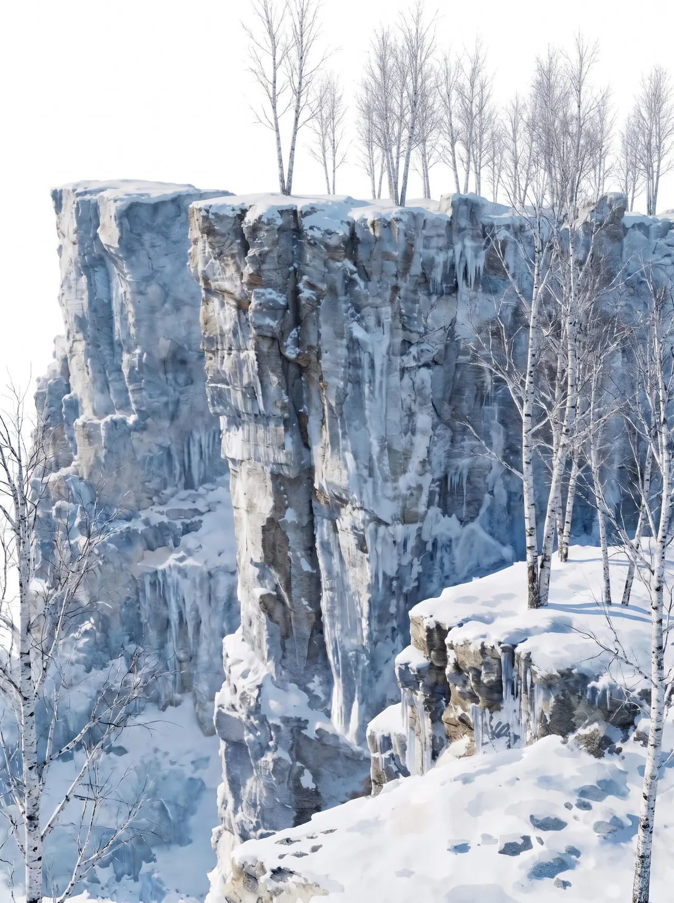
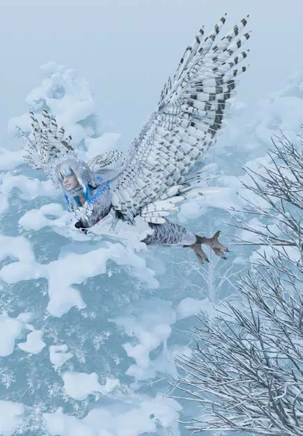
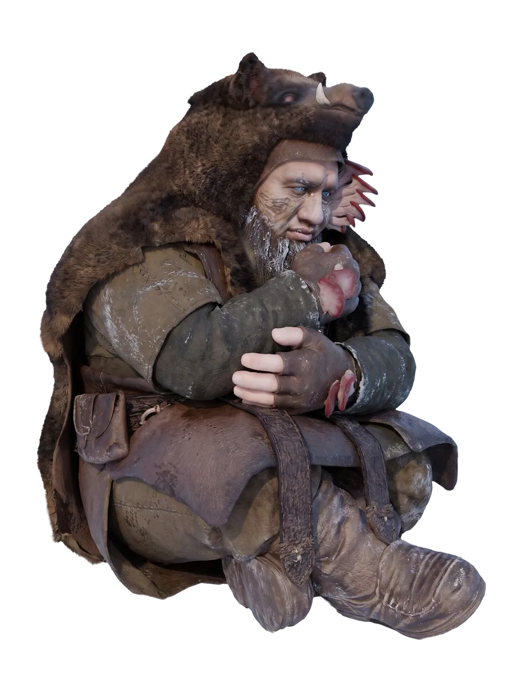
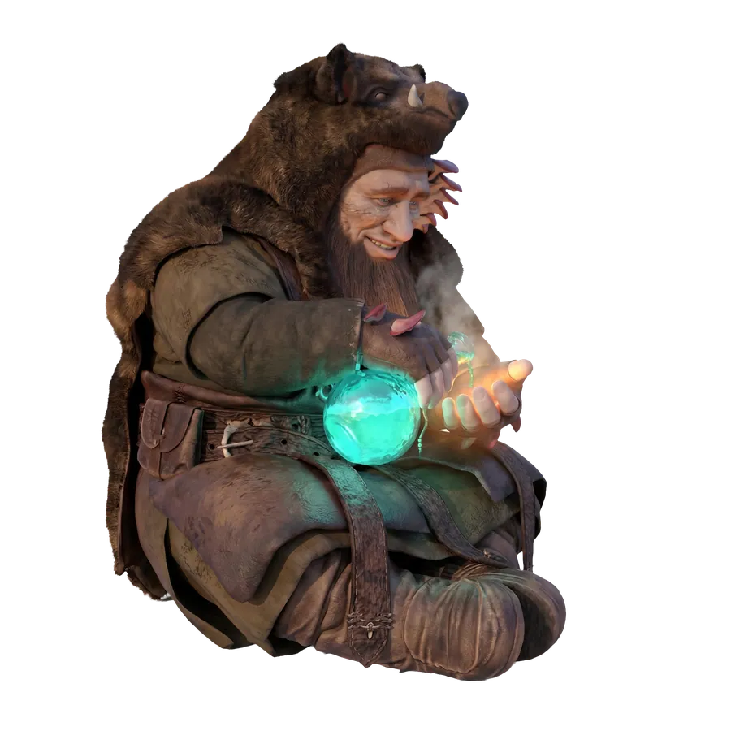
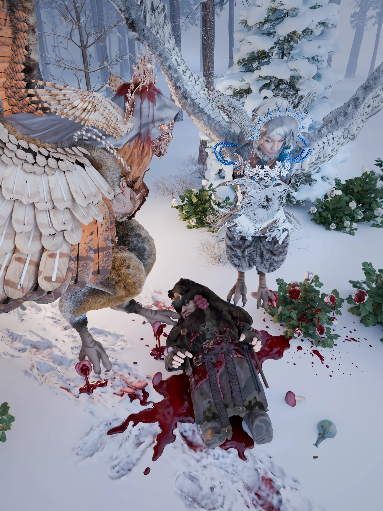
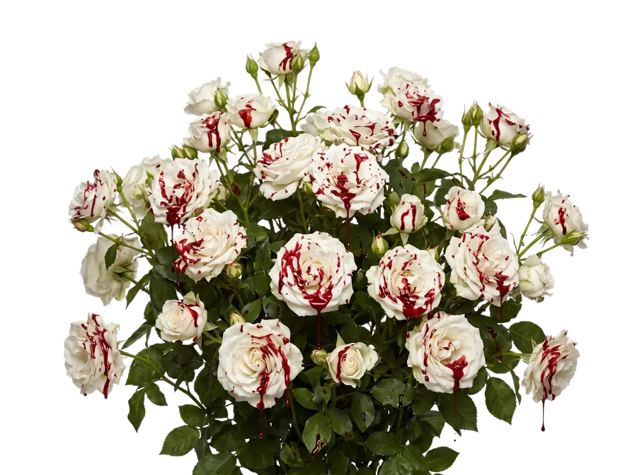
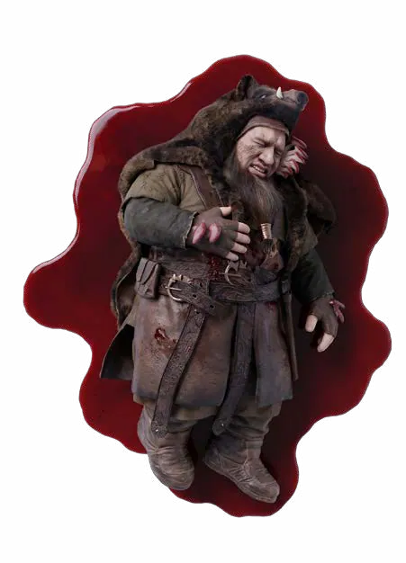
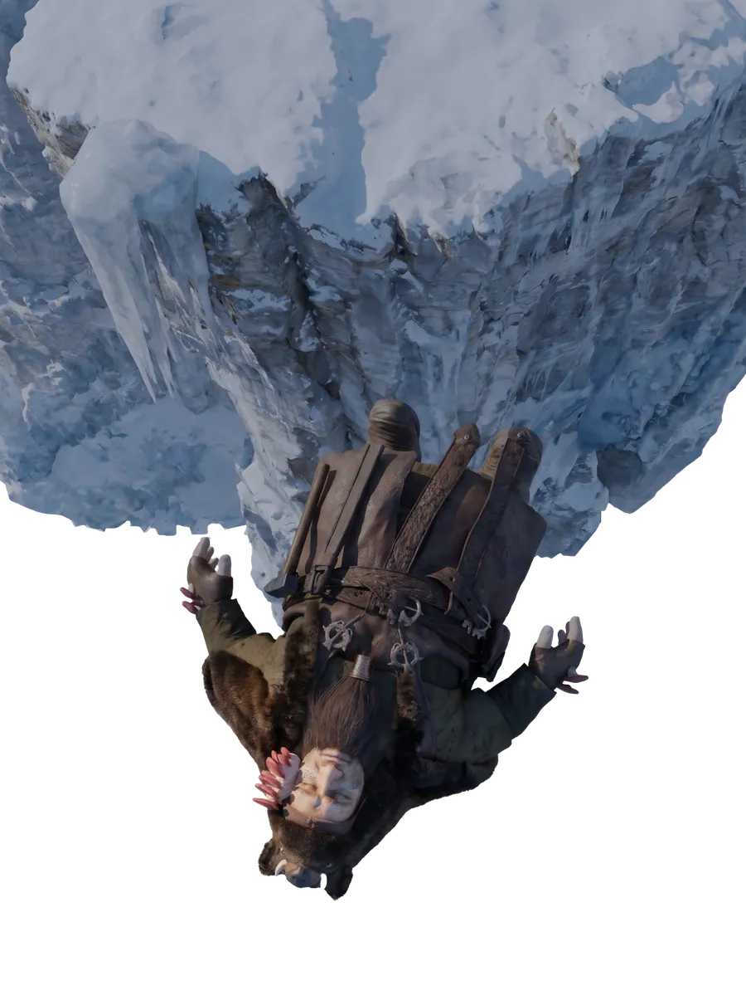

Mùa Đông Ửng Hồng

Vương quốc Khói Trắng khuất dần sau lưng Brann vào một buổi sớm lặng gió. Cậu rời cung điện khi ánh nắng vừa chạm tới những mái vòm xanh lam cao nhất. Những dòng nước trong thủy viên đã trở lại nhịp chảy quen thuộc, chảy từ tầng này xuống tầng khác . Giữa khoảng sân, hơi sương còn vương trên lá, và đâu đó từ phía khu vườn, một làn khói trắng cuối cùng đang bay lên khỏi mái hiên, mỏng tan vào bầu trời.
Brann không quay đầu lại cho đến khi đã đi qua khỏi cây cầu đá. Từ sườn đồi nhìn xuống, cung điện giờ chỉ còn là một khoảng màu xanh và trắng nằm giữa những tầng cây. Cậu đứng đó một lúc, ngất ngây trong ánh nắng sớm mai, ngắm nhìn lần cuối cung điện khói trắng.
Trong túi áo cậu có một lọ thủy tinh nhỏ mà Osric đã đưa trước lúc chia tay. Thứ tinh dầu màu hổ phách bên trong không thể làm những cụm nấm biến mất, càng không thể ngăn chúng tiếp tục ăn sâu vào da thịt, nhưng chí ít, nó có thể khiến những cơn đau dịu xuống trong một khoảng thời gian.
Cậu cất nó ở lớp áo trong cùng, nơi hơi ấm cơ thể giữ cho chất dầu khỏi đông đặc, rồi men theo con đường nhỏ dẫn ra khỏi khu rừng. Tấm bản đồ của Eira tới giờ vẫn là thứ chỉ đường duy nhất. Nhưng ít nhất, lần này Brann đã biết phải nhìn vào đâu.
Những ngày ở Vương quốc Khói Trắng, Bướm Đêm đã chỉ cho cậu cách nhận ra một vài ký hiệu cổ mà Eira thường dùng thay vì cứ cúi đầu tìm một con đường được vẽ sẵn. Nhờ vậy, khi trải tấm bản đồ lên một phiến đá, Brann không còn thấy trước mắt mình là một mớ đường nét rối rắm nữa. Cậu lần theo dãy núi kéo dài về phía Bắc. Qua khỏi đó, những nét mực thưa dần. Rồi biến mất gần như hoàn toàn. Eira chỉ để lại vài dòng chữ nhỏ bên cạnh một khoảng trắng rộng lớn, và xa hơn khoảng trắng ấy là biển. Brann nhìn một hồi, ngẩng lên xác định hướng mặt trời, rồi gấp bản đồ lại. Cậu tiếp tục rảo chân về phương Bắc xa xôi.
Càng tiến sâu về phía Bắc, cái lạnh càng trở nên dữ dội. Màu sắc của những khu rừng xanh thẫm dần nhạt nhòa đi, nhường chỗ cho bạch dương bạc nổi lên giữa những cành đen mảnh khảnh. Tuyết lúc đầu chỉ nằm thành từng mảng dưới những tán cây rậm, rồi dần phủ kín mặt đất, lấp những khe đá và nuốt mất dấu con đường. Brann chỉ còn biết đi theo hướng của la bàn và những ký hiệu trên bản đồ.
Brann vốn sinh ra ở một vùng đất tuyết phủ. Cậu vốn chẳng xa lạ gì với cái lạnh của mùa đông. Quê hương Brann cũng có những ngày tháng tuyết phủ dày đến mức cửa nhà không thể mở nổi vào buổi sáng, những đêm gió rít quanh mái nhà đến tận bình minh và những con suối đóng băng cứng đến mức một chiếc xe chở hàng có thể đi qua không hề nứt gãy.
Thế nhưng cái lạnh nơi đây thật khác. Nó khiến Brann, một kẻ từng nghĩ mình hiểu mùa đông, phải thừa nhận rằng có lẽ trước giờ cậu chỉ mới biết một phần của nó. Những đợt gió dữ dội từ phương Bắc tràn xuống những thung lũng rộng không có gì ngăn cản, mang theo thứ rét buốt len qua từng lớp vải, luồn xuống cổ áo rồi bò dọc sống lưng. Bộ ria lấm tấm những hạt băng nhỏ, tuyết bám trắng trên vai áo, còn đôi ủng đã ướt gần đến cổ chân sau hàng giờ lún qua những khoảng tuyết xốp. Chỉ một trận gió quét qua, cả mặt đất lập tức bốc lên thành những dải trắng mịt mù, lướt ngang qua những thân bạch dương rồi biến mất vào rừng sâu.
Sang ngày thứ ba, Brann bắt đầu mất cảm giác ở đầu ngón tay. Cậu dừng lại dưới một gốc cây, khum hai bàn tay trước miệng và hà hơi, nhưng chút ấm áp mong manh vừa chạm vào da đã nhanh chóng biến mất. Khi Brann thử co duỗi các ngón tay lần nữa, một cơn đau từ cổ tay bất ngờ lan ngược lên cánh tay khiến cậu phải nghiến răng. Cậu kéo tay áo lên. Những cụm nấm trắng xám nằm dọc theo cẳng tay, một vài thân nhỏ đã nhú lên giữa những cụm nấm cũ. Vùng da quanh đó tái nhợt vì lạnh, và mỗi khi gió lọt qua tay áo, những mảng bám nằm sâu bên dưới lại nhức lên từng đợt. Bàn tay còn lại của Brann vô thức chạm vào chiếc lọ trong túi áo. Cậu đã định lấy nó ra. Nhưng cuối cùng chỉ siết nhẹ bàn tay quanh thân lọ rồi buông. Con đường phía trước còn quá dài.
Đến buổi chiều, tuyết bắt đầu dày hơn. Brann phải dùng cán búa dò dẫm từng bước bởi lớp tuyết mới có thể che kín những hốc đá sâu. Trời càng lúc càng tối, những thân bạch dương phía xa chỉ còn là những vệt xám đứng im sau màn tuyết trắng, và khi cậu đang tìm một khoảng đất khuất gió để tạm nghỉ ngơi, một thứ gì đó bất ngờ rơi trúng đầu.
Bụppp
Brann khựng lại. Tuyết vỡ tung trên tóc, trượt xuống cổ áo. Cậu giật mình phủi lấy phủi để, ngẩng đầu nhìn lên. Không có gì ngoài những cành cây. Brann cau mày, rồi tiếp tục đi. Chưa được ba bước, một nắm tuyết khác rơi xuống. Lần này trúng thẳng vai. Cậu quay phắt lại.
"Ai đấy?"
Khu rừng im lặng. Brann nhìn quanh, đôi tai gần như dựng lên dưới chiếc mũ lông, nhưng ngoài tiếng gió lùa qua những ngọn thông, cậu chẳng nghe thấy gì. Rồi rất khẽ, từ đâu đó trên cao vọng xuống những tiếng cười. Brann từ từ ngẩng đầu. Trên một cành thông cao gần như chìm trong tuyết, có hai đôi mắt đang nhìn xuống. Ngay khi bị phát hiện, một bóng trắng lập tức rụt vào sau thân cây. Chiếc bóng còn lại chậm hơn một nhịp. Brann chỉ kịp nhìn thấy vài chiếc lông nâu sẫm trước khi chúng cũng biến mất. Cậu đứng im.
"…Ta thấy rồi."
Không có tiếng trả lời.
"Đừng đùa nữa, mau xuống đây đi."
Vẫn im lặng. Brann nheo mắt.

"Ta nhìn thấy cánh của ngươi."
Một vài hạt tuyết rơi từ cành cây. Rồi một khuôn mặt từ từ ló ra. Đó là một thiếu nữ. Mái tóc sáng màu bị gió thổi rối quanh gương mặt, và phía sau vai cô là một đôi cánh lớn màu nâu hạt dẻ, những chiếc lông dài ở đầu cánh sẫm dần chuyển thành màu nâu đen. Cô nhìn Brann vài giây, đôi mắt cong lên trước cả khi đôi môi kịp mỉm cười, rồi quay sang thân cây bên cạnh. Một khuôn mặt khác xuất hiện.
Cô gái thứ hai có đôi cánh gần như trắng hoàn toàn, đến mức khi khép lại giữa tuyết, chúng gần như biến mất. Một vài sợi lông mảnh trên đỉnh đầu lay động trong gió, ánh bạc rất nhạt chạy dọc theo mép cánh mỗi khi cô cử động.
Hai cô gái nhìn xuống Brann với cặp mắt to tròn, trong veo, đầy vô tội. Brann cũng đứng im, ngước lên, cau mày khó hiểu. Được một lát, cô gái cánh trắng khúc khích bật cười. Brann phủi nốt tuyết trên đầu.
"Vui lắm sao?"
Cô vội mím môi lại, nhưng nụ cười vẫn còn nguyên trong ánh mắt.
"Xin lỗi."
Brann nhìn đống tuyết vẫn còn nằm trên vai mình.
"…Cô không có vẻ gì là hối lỗi lắm."
Lần này cô gái cánh nâu cũng bật cười. Cô nhẹ nhàng đáp xuống một nhánh thấp hơn, đôi chân chim khép lại quanh cành cây.
"Chúng ta nhìn thấy ngươi từ trên kia."
Cô chỉ lên trời.
"Và?"
Brann cố gắng kiềm chế.
Người cánh trắng nghiêng đầu, nhìn cậu với vẻ tò mò.
"Trông ngươi rất tí nị."
Cô lại nhìn chiếc mũ đầy tuyết của cậu, khóe môi giật nhẹ.
"Với lại, rất dễ ném trúng."
“Nàyyy!”
Dứt lời, cô gái cánh trắng bỗng nghiêng người khỏi cành cây. Brann còn chưa kịp hiểu nụ cười nơi khóe môi cô có ý gì, đôi cánh trắng đã bật mở. Một luồng gió quét qua những ngọn thông. Cô lao xuống. Bóng trắng lướt sát qua cậu nhanh đến mức lớp tuyết dưới chân cũng bị cuốn tung lên. Cậu theo phản xạ cúi người, hai tay ôm lấy đầu. Nhưng chẳng có gì xảy ra. Brann chậm chạp mở mắt. Rồi đưa tay lên. Trống không. Chiếc mũ đã biến mất. Cậu quay phắt lại.
Cô gái cánh trắng đã đáp xuống phía sau cậu từ lúc nào. Chiếc mũ của Brann đang nằm ngay ngắn trên đầu cô. Nó rõ ràng chẳng vừa chút nào.Vành mũ trễ xuống giữa những lọn tóc, hơi nghiêng sang một bên. Cô khẽ lắc đầu cho nó ngay lại, rồi ngước lên nhìn cậu bằng đôi mắt trong veo.
"Ấm thật đấy."
Brann nhìn cô. Rồi nhìn chiếc mũ.
"…Trả tôi."
Cô gái cánh trắng chớp mắt, vẻ mặt vô tội đến mức gần như đáng ngờ.
"Ta chỉ muốn thử thôi."
"Cô có thể hỏi."
"Nhưng như thế thì đâu biết nó có ấm thật hay không."
Brann há miệng định nói gì đó. Rồi lại ngậm lại. Trên cao, một tiếng cười khúc khích vọng xuống. Cô gái cánh nâu cuối cùng cũng rời khỏi cành cây. Trái ngược hoàn toàn với người kia, cô không lao xuống mà chỉ từ tốn dang rộng đôi cánh, thả mình theo luồng gió. Những chiếc lông nâu sẫm khẽ rung trong không khí trước khi cô đáp xuống bên cạnh người cánh trắng.
"Liv."
Cô gọi, giọng nghe như nhắc nhở.
Người cánh trắng quay sang.
"Gì chứ?"
"Trả cho người ta đi."
Liv dường như vẫn còn hơi tiếc. Cô chần chừ một lát, rồi cúi thấp người về phía Brann. Brann còn đang không hiểu cô định làm gì thì Liv bỗng hất đầu. Chiếc mũ trượt khỏi mái tóc, rơi xuống. Cậu luống cuống chụp lấy nó ngay trước khi nó kịp chạm vào tuyết. Chiếc mũ vừa đội trở lại lên đầu đã lệch hẳn sang một bên. Brann kéo xuống. Nó lại lệch sang phía còn lại. Cậu chỉnh lần nữa. Một nhúm tuyết mắc đâu đó bên trong rơi thẳng xuống trán. Hai cô gái đồng loạt cố nén cười. Brann dừng tay. Cậu nhìn người cánh trắng. Rồi nhìn người cánh nâu. Hai người lập tức ngoảnh mặt sang hai hướng khác nhau. Đôi cánh trắng của Liv khẽ rung lên sau lưng. Brann nhắm mắt. Cơn bực vừa kịp dâng lên cuối cùng chỉ biến thành một tiếng thở dài thật dài. Cậu phủi nốt tuyết khỏi vành mũ, kéo nó xuống cho ngay ngắn rồi quyết định rằng mình đã phí đủ thời gian cho chuyện này.
"Được rồi."
Brann nhìn hai người trước mặt.
"Ta chỉ muốn hỏi đường."
Cô gái cánh nâu hơi nghiêng đầu.
"Ngươi định đi đâu?"
“Ra biển”
Cô ngẩng lên nhìn về phía xa. Brann cũng nhìn theo. Sau những ngọn thông phủ tuyết là một dãy núi kéo dài gần kín chân trời. Những đỉnh cao nhất chìm trong mây xám, chỉ để lộ từng mảng đá đen giữa những triền trắng.
"Ngươi định đi qua đó?"
"Nếu đây là đường ngắn nhất."
Cô gái cánh trắng ghé lại nhìn tấm bản đồ.
"Đi bộ ư?"
Brann nhìn xuống đôi chân mình.
"Tôi đâu còn cách nào khác."
Hai cô gái im lặng. Brann ngẩng lên.
"Sao?"
Người cánh nâu nhìn dãy núi một lần nữa rồi mới đáp.
"Nếu đi theo đường bộ, ngươi phải vòng qua ba sườn núi, vượt thung lũng phía bên kia rồi men theo sông băng mới tới được bờ biển."
Brann nhìn lại tấm bản đồ. Trên giấy, quãng đường ấy chỉ dài bằng một ngón tay.
"Mất bao lâu để đi qua đó?"
Cô gái cánh trắng chống một chân xuống tuyết, chân còn lại co lên giữa lớp lông mềm dưới thân. Cô ngước nhìn trời như thể thật sự đang tính toán.
"Với bọn ta à?"
"Với tôi."
"À."
Cô lại nhìn Brann.
"Lâu lắm."
Brann cau mày. Người cánh nâu bật cười khẽ trước câu trả lời chẳng giúp ích được gì của bạn mình.
"Nếu tuyết không dày thêm, các lối núi không bị lấp và ngươi không đi lạc…"
Cô ngừng một chút.
"…thì đến khi tuyết bắt đầu tan, chưa chắc ngươi đã đi được nửa chặng đường."
Brann nhìn dãy núi trước mặt. Lần đầu tiên, chúng có vẻ xa hơn hẳn so với lúc còn nằm trên bản đồ.
"Không có đường nào nhanh hơn sao?"
"Có."
Cô gái cánh trắng đáp ngay. Brann quay sang cô.
"Đường nào?"
Cô không trả lời.
Chỉ có khóe môi từ từ cong lên.
Cô gái cánh nâu nhìn bạn mình, dường như lập tức hiểu ra điều gì đó. Một nụ cười rất giống thế cũng xuất hiện trên gương mặt cô.
Brann bắt đầu thấy không yên tâm.
"Trừ phi…"
Người cánh trắng kéo dài giọng.
"…ngươi không đi dưới đất."
Brann nhìn cô.
Rồi nhìn đôi cánh trắng đang khẽ mở ra sau lưng cô.
"Ý cô là sao?"
"Ta là Liv."
Cô đáp tỉnh bơ, như thể đó mới là điều quan trọng nhất cần sửa.
Rồi cô nghiêng đầu về phía người bên cạnh.
"Còn kia là Skadi."
Cô gái cánh nâu khẽ gật đầu với Brann.
"Brann."
"Được rồi, Brann. Ngươi sẵn sàng rồi chứ?"
Rồi cô bước đến gần hơn, nhìn Brann một lượt từ đầu xuống chân, sau đó ngẩng lên nhìn dãy núi, rồi lại nhìn cậu. Ánh mắt ấy khiến Brann bắt đầu cảm thấy có gì đó không ổn.
"Cô nhìn tôi như vậy là có ý gì? Sẵn sàng…gì chứ?"
Liv không trả lời ngay. Chỉ quay sang Skadi. Hai người trao nhau một ánh mắt rất nhanh. Brann nhìn người này. Rồi người kia. Một linh cảm chẳng lành xuất hiện.
"Khoan."
Skadi tiến lại. Brann lùi một bước.
"Các cô định làm gì?"
Không ai trả lời. Liv cũng tiến tới. Brann lùi thêm.
"Ê."
Hai người vẫn mỉm cười.
"Đừng nói là…"
Đôi cánh phía sau họ đồng loạt mở ra. Brann trợn mắt.

"Không."
Liv chớp mắt.
"Không gì?"
"Tôi biết các cô đang nghĩ gì."
"Thật sao?"
"Tôi không biết bay đâu."
Nụ cười của Liv càng rõ hơn.
"Ta đâu có nói vậy."
Brann lập tức chỉ vào mình.
"Tôi cần đứng dưới đất."
Skadi đã vòng ra phía sau.
Brann quay đầu.
"Ê?"
Cậu vừa kịp thấy một chân chim của Skadi khép lại quanh phần áo dày trên vai mình, chân còn lại giữ chắc phía đối diện.
"Khoan—"
Một luồng gió mạnh quất xuống mặt tuyết. Brann cảm thấy đôi chân rời khỏi mặt đất.
"KHÔNGGGG—!"
Tiếng hét vang xuyên qua cả khu rừng. Brann không nhớ mình đã nhắm mắt từ lúc nào. Cậu chỉ biết gió đang gào bên tai, hai chân hoàn toàn không chạm vào bất cứ thứ gì, còn cái cảm giác khủng khiếp trong bụng báo cho cậu biết mặt đất đang mỗi lúc một xa hơn.
"Cho tôi xuống!"
Không ai đáp.
"Tôi nói cho tôi xuống!"
Một tiếng cười khẽ vọng xuống từ phía trên. Brann hé một mắt. Sai lầm. Những ngọn thông đã nằm thấp bên dưới. Cậu lập tức nhắm tịt lại.
"Tôi không nhìn! Tôi không nhìn nữa!"
Giọng Skadi vang lên trên đầu, bình thản đến đáng ghét.
"Ngươi có thể mở mắt."
"Không!"
"Đẹp lắm."
"Không cần!"
Một bóng trắng lướt ngang. Liv đang bay bên cạnh. Mái tóc và lớp lông mềm quanh cổ cô tung lên trong gió. Thấy Brann co rúm giữa hai chân Skadi, cô bật cười.
"Ngươi đang ôm chân Skadi kìa."
Brann lúc này mới nhận ra hai tay mình đang quặp chặt lấy một chân chim phủ lông nâu. Cậu càng ôm chặt hơn.
"Tôi không quan tâm!"
Liv cười lớn hơn. Skadi đưa Brann lên cao hơn. Mỗi lần cô đập cánh, cậu lại cảm thấy cơ thể mình được nâng lên trong một nhịp mạnh mẽ; mỗi khi cô lượn theo chiều gió, cảm giác ấy lại nhẹ đi, chỉ còn luồng không khí lạnh lướt qua mặt. Một lúc sau, khi nhận ra mình vẫn chưa chết, Brann mới dám hé mắt lần nữa. Lần này cậu không nhìn xuống. Cậu nhìn ngang. Những đỉnh thông đang trôi qua. Xa hơn một chút là những triền núi phủ tuyết. Xa hơn nữa, nơi màn mây tách ra, ánh chiều đang nhuộm cả chân trời thành một dải vàng đỏ. Brann quên nhắm mắt. Skadi cảm thấy bàn tay đang siết chân mình dần nới lỏng. Cô không nói gì. Chỉ hơi nghiêng cánh. Khung cảnh phía trước mở rộng. Cả khu rừng xuất hiện dưới chân Brann. Những thân cây mà cậu đã mất cả ngày để len qua giờ chỉ còn là một tấm thảm xanh đen trải giữa tuyết. Các con sông đóng băng uốn quanh chân núi thành những dải bạc dài, những vực sâu khiến Brann phải vòng đường hàng giờ chỉ còn là vài đường tối mảnh giữa những triền trắng.
Cậu nhìn không chớp mắt. Từ trên này, thế giới khác hoàn toàn. Những thứ từng ngăn cản cậu không còn là những bức tường. Chúng chỉ là những đường nét nằm trên mặt đất. Liv bay ngang qua, thấy vẻ mặt Brann thì mỉm cười.
"Đỡ sợ chưa?"
Brann im lặng vài giây.
"…Một chút."
Liv bay gần hơn.
"Thật không?"
"Ừ."
Cô nhìn Skadi. Rồi nhìn Brann. Nụ cười nơi khóe môi Liv khiến Brann lập tức cảnh giác.
"Khoan."
Skadi cũng cúi xuống nhìn cậu.
"Tôi vừa nói một chút thôi."
Không ai đáp.
"Các cô lại định làm gì?"
Liv khẽ khép một bên cánh sát người, đầu hơi nghiêng như ra hiệu.
Brann trợn mắt.
"Đừng."
Hai chân Skadi bất ngờ thả lỏng. Thế giới rơi thẳng xuống. Brann không kịp hét ngay. Trong khoảnh khắc đầu tiên, cậu chỉ thấy bụng mình trống rỗng, hai cánh tay quờ vào khoảng không và bầu trời đột ngột xoay ngược; rồi khi tiếng hét cuối cùng bật ra, nó lớn đến mức Liv phải bật cười giữa không trung.
"SKADIIII!"
Brann rơi xuyên qua những hạt tuyết.
Một giây.
Hai giây.
Đến giây thứ ba, bóng nâu từ phía trên lao xuống nhanh hơn cả cậu. Skadi khép cánh, bổ nhào, vòng xuống dưới rồi mở rộng đôi cánh đúng lúc Brann rơi tới. Cậu va vào lớp lông mềm trên lưng cô, lập tức quặp cả hai tay quanh phần cổ phủ lông và nằm bẹp xuống, mặt trắng bệch. Liv lượn đến bên cạnh.
"Ngươi còn sống không?"

Brann từ từ ngẩng đầu. Hai cô đang cười. Không hề ác ý. Chỉ vui đến mức mắt đều cong lại. Brann thở hổn hển.
"Tôi…"
Cậu nuốt xuống.
"…ghét các cô."
Liv quay mặt đi, cố giấu tiếng cười. Skadi cũng phải cúi đầu. Nhưng chỉ một lúc sau, Brann nhìn xuống. Cậu đang nằm trên lưng Skadi. Không còn bị treo lơ lửng nữa. Đôi tay vẫn ôm chặt phần cổ phủ lông của cô, nhưng giờ cậu có thể nhìn thấy cả hai cánh mở rộng ở hai bên, mỗi nhịp đập đều đẩy những luồng khí mạnh chạy dọc cơ thể. Phía dưới, mặt trời đang lặn sau núi.
Brann từ từ ngồi dậy. Gió tạt mái tóc cậu ra sau. Liv lướt ngang bên cạnh. Lần này, khi cô lao xuống rồi vút ngược lên, Brann không nhắm mắt nữa. Cậu nhìn theo. Skadi tăng tốc. Gió mạnh hơn. Brann cúi thấp người theo bản năng, rồi khi nhận ra mình không còn thấy sợ như trước, cậu thử ngồi thẳng lại. Một tiếng cười bật ra khỏi miệng cậu. Chính Brann cũng bất ngờ. Skadi ngoái đầu nhìn. Cậu đang cười. Không phải cười gượng. Cũng không phải vì ai nói điều gì. Brann nhìn dãy núi phía trước, nhìn những tầng mây đang cuộn quanh các đỉnh tuyết, rồi bỗng giơ một tay lên khỏi lưng Skadi.
"Nhanh hơn được không?"
Liv lập tức quay sang. Skadi cũng nhìn lại. Brann thấy hai ánh mắt ấy, lập tức hiểu mình vừa tự đào hố.
"Khoan."
Hai đôi cánh đồng thời mở rộng.
"Tôi chỉ hỏi thôi."
Liv đã lao lên phía trước.
"Không cần thật đâu."
Skadi bắt đầu tăng tốc.
"Skadi."
Gió rít lên.
"SKADI!"
Nhưng lần này, tiếng hét của Brann không còn hoàn toàn vì sợ. Nửa sau của nó tan thành tiếng cười.
Skadi nghe thấy. Cô ngoái đầu lại, chỉ vừa đủ để Brann nhìn thấy khóe môi cong lên giữa những lọn tóc bị gió hất tung, rồi bất ngờ ép sát đôi cánh vào thân. Cả hai lập tức lao xuống.
Brann còn chưa kịp chuẩn bị thì biển trời trước mắt đã dựng đứng. Những ngọn thông trắng xóa dưới chân lớn lên với tốc độ chóng mặt, gió giật phăng chiếc mũ khỏi đầu cậu nếu cậu không kịp chụp lấy, còn tiếng cười vừa thoát khỏi cổ họng lập tức biến thành một tiếng hét dài vang khắp thung lũng. Liv lao xuống theo.
Đôi cánh trắng khép sát sau lưng khiến cô gần như biến thành một vệt sáng đang xé qua nền trời xanh thẫm. Cô vượt qua Skadi, lộn người giữa không trung rồi mở cánh ngay trên những ngọn thông, kéo theo một dải tuyết bụi bay tung lên phía sau. Brann chỉ kịp nhìn thấy bóng cô lướt qua trước mặt.
"Không được!"
Cậu đập tay lên vai Skadi.
"Đuổi theo cô ấy!"
Skadi bật cười. Lần này chẳng cần Brann giục thêm. Đôi cánh nâu mở rộng.
Một nhịp.
Hai nhịp.
Rồi cả khu rừng lao ngược về phía sau. Đến lúc ba người đáp xuống, trời đã chuyển sang màu tím nhạt.
Brann bước khỏi lưng Skadi với hai chân mềm nhũn, đi được vài bước đã phải chống tay vào một thân bạch dương. Hơi thở cậu phả thành từng làn trắng đục, tóc rối tung, chiếc mũ lệch hẳn sang một bên, vậy mà nụ cười vẫn chưa chịu biến mất. Liv đáp xuống trước mặt cậu nhẹ đến mức lớp tuyết dưới chân chỉ lõm đi một chút. Cô nghiêng đầu quan sát.
"Ngươi ổn chứ?"
Brann chống hai tay lên đầu gối, cố lấy lại hơi.
"Ta nghĩ…"
Cậu hít một hơi thật sâu.
"…ruột gan ta vẫn còn ở trên kia."
Liv bật cười, tiếng cười nhỏ và trong, còn Skadi vừa khép cánh vừa bước ngang qua, tiện thể dùng đầu cánh chỉnh lại chiếc mũ đang lệch trên đầu Brann. Cử chỉ nhanh đến mức Brann chưa kịp phản ứng. Cậu đưa tay chạm lên vành mũ. Skadi đã đi trước. Liv cũng chạy theo, để lại trên tuyết một hàng dấu chân chim mảnh. Brann đứng lại thêm một chút. Rồi mới bước theo. Cậu không biết rằng từ hôm ấy, cậu sẽ bắt đầu nhận ra tiếng cánh của họ. Cánh Skadi nặng hơn, mỗi lần hạ xuống đều đẩy một luồng gió dài sát mặt đất. Cánh của Liv nhẹ hơn. Những nhịp cánh của cô nhanh và ngắn, đôi lúc gần như chẳng nghe thấy gì ngoài tiếng lông vũ lướt qua không khí. Vài ngày sau, Brann đã có thể biết ai đang bay tới mà không cần ngẩng đầu.
Buổi sáng đầu tiên ở vùng đất trên mây, Liv đánh thức Brann khi mặt trời còn chưa mọc. Không phải bằng tiếng gọi. Một nắm tuyết lọt qua cửa sổ. Nó rơi đúng giữa trán cậu. Brann bật dậy. Ngoài cửa, một chiếc cánh trắng vừa biến mất. Cậu ngồi im vài giây, tuyết tan thành nước chảy dọc xuống sống mũi. Rồi chậm rãi bước khỏi giường. Khi Liv quay lại nhìn qua cửa sổ lần nữa, một nắm tuyết bay thẳng vào mặt cô. Tiếng cười vang lên giữa buổi sớm.
Họ đuổi nhau qua những cây cầu gỗ còn phủ sương giá, xuyên qua một khu rừng bạch dương nơi người ta treo những dải ruy băng dài lên cành cây. Mỗi khi có gió, hàng trăm dải lụa đỏ, xanh và vàng lại bay lên cùng lúc, quấn quanh những thân cây trắng bạc thành một dòng màu sắc chuyển động.
Brann chạy dưới đất. Liv bay là là ngay trên đầu. Cứ mỗi lần cậu tưởng mình sắp bắt được cô, đôi cánh trắng lại nâng cô lên khỏi tầm tay chỉ một chút.
"Đứng lại!"

Liv quay người giữa không trung, vẫn bay lùi. Brann cúi xuống nhặt tuyết. Cô lập tức vút lên. Nắm tuyết bay hụt. Nhưng Liv mải ngoái đầu nhìn Brann nên không để ý Skadi đang từ phía đối diện bay tới. Skadi nghiêng cánh tránh cô trong gang tấc. Liv giật mình, chao hẳn sang một bên rồi đáp xuống một ụ tuyết. Brann cười đến mức phải chống đầu gối. Liv ngồi giữa tuyết nhìn cậu. Mấy giây sau, cô cúi xuống. Brann ngừng cười.
"Liv."
Cô bắt đầu vun tuyết.
"Liv."
Hai cánh trắng khép lại che mất thứ cô đang làm. Brann lùi một bước.
"Ta xin lỗi."
Liv ngẩng lên. Trong tay là một khối tuyết lớn gần bằng đầu Brann. Cậu quay người chạy. Skadi đang đứng trên một cành cây cao, nhìn cả hai lao qua khu rừng phía dưới. Khi Brann chạy ngang, cô khẽ giũ cánh. Cả một mảng tuyết trên cành đổ xuống đầu cậu. Brann đứng chết lặng giữa màn trắng. Trên cao, Skadi quay mặt đi. Nhưng vai cô rung lên. Brann nhìn cô. Rồi nhìn Liv đang ôm bụng cười cách đó không xa. Cậu chậm rãi cúi xuống. Lần này, cậu lấy tuyết bằng cả hai tay.
Chiều hôm ấy, khi trở về, Brann để hai người đi trước. Cậu nói muốn nhặt lại chiếc móc áo vừa đánh rơi trong rừng. Skadi nhìn cậu một lúc, nhưng không hỏi. Liv đã bay vòng trở lại, định tìm cùng. Brann phải xua tay mấy lần mới khiến cô chịu đi. Chỉ đến khi hai bóng cánh khuất sau rặng bạch dương, cậu mới dựa lưng vào thân cây. Nụ cười trên môi tắt đi. Bàn tay phải run lên. Không nhiều. Chỉ đủ khiến những đầu ngón tay không thể khép lại hoàn toàn. Brann kéo tay áo. Vùng da quanh những cụm nấm đã chuyển sang màu tím tái, vài đường gân sẫm nổi lên dưới da. Cơn đau mà cậu đã cố phớt lờ từ giữa buổi giờ chạy từng đợt lên khuỷu tay, theo mỗi nhịp tim lại giật sâu thêm một chút. Cậu nhìn về phía những tán cây. Không còn ai. Chiếc lọ thủy tinh được lấy ra. Brann nhỏ một giọt vào lòng bàn tay, xoa lên vùng da lạnh cứng rồi ngồi yên cho đến khi hơi ấm bắt đầu thấm vào. Những ngón tay từ từ cử động trở lại. Cậu thử nắm tay.
Một lần.
Hai lần.
Đến lần thứ ba, bàn tay đã đủ chắc. Brann kéo tay áo xuống, cất lọ vào sâu trong người rồi cúi xuống nhặt một cành cây nhỏ nằm cạnh chân. Khi trở về, Liv đang ngồi trên lan can chờ. Cô nhìn vật trong tay cậu.
"Ngươi tìm được rồi à?"
Brann khựng một thoáng. Rồi giơ cành cây lên.
"Không. Chắc rơi đâu mất rồi."
Liv chẳng nghi ngờ gì. Cô nhảy khỏi lan can, vừa đi vừa kể cho Brann nghe chuyện Skadi ban nãy suýt đâm vào một mái tháp vì cứ quay lại xem cậu có theo kịp hay không. Brann quay sang nhìn Skadi. Cô đang đứng cách đó khá xa, giả vờ như không nghe thấy. Brann mỉm cười. Cành cây vô dụng vẫn nằm trong tay cậu cho tới tận lúc vào phòng. Ít ngày sau, Skadi đưa họ tới một hồ băng nằm lọt giữa những đỉnh núi.
Mặt hồ trong đến kỳ lạ, lớp băng xanh thẫm kéo dài hàng trăm bước, dưới đó là những dải thực vật màu bạc đang lay động theo dòng nước chảy sâu bên dưới. Dọc hai bên bờ, những căn nhà gỗ nhỏ nép dưới các cây thông, khói từ ống khói bay thẳng lên trời bởi hôm ấy hiếm hoi không có gió.
Brann đã trượt ngã bốn lần trước khi hiểu được cách đứng. Đến lần thứ năm, cậu trượt được. Không đẹp. Không hề duyên dáng. Nhưng ít nhất không ngã. Liv lướt phía trước bằng những bước chân nhẹ đến mức gần như không để lại vết trên băng. Cô quay người, chìa tay về phía Brann. Cậu nhìn bàn tay ấy. Rồi nhìn mặt băng.
"Ta tự đi được."


Liv vẫn để tay ở đó. Brann đi thêm hai bước. Chân trượt. Cậu chụp lấy tay cô. Liv bật cười nhưng không nói gì, chỉ kéo cậu đi. Ban đầu Brann bám rất chặt. Sau đó lỏng dần. Hai người trượt qua mặt hồ, bóng họ kéo dài dưới ánh chiều. Đến giữa hồ, Skadi từ trên cao lao xuống, đầu cánh quét sát mặt băng khiến một lớp tuyết mỏng tung lên quanh họ. Brann ngẩng đầu.
"Skadi!"
Cô lượn qua. Cậu buông tay Liv, lấy đà chạy theo. Được vài bước, bàn chân Brann bất ngờ mất lực. Cậu ngã. Lần này không cười. Đầu gối đập xuống băng, hai tay chống trước người. Liv trượt quá vài bước rồi lập tức quay lại. Brann đã đứng lên trước khi cô tới.
"Không sao."
Cậu phủi tuyết. Liv nhìn xuống bàn tay cậu. Những ngón tay đang co lại. Brann giấu chúng vào túi áo.
"Ta chỉ trượt thôi."
Liv không nói gì. Cô đưa tay ra lần nữa. Lần này Brann không từ chối. Cái lạnh ngày càng tìm được nhiều cách chui vào cơ thể cậu. Có hôm nó bắt đầu từ đầu ngón tay. Có hôm từ những cụm nấm gần khuỷu tay. Có hôm Brann đang ngủ thì tỉnh dậy vì cảm giác hàng trăm sợi chỉ lạnh đang kéo sâu bên dưới da. Cậu học cách dùng tinh dầu mà không để hai người kia thấy. Trước bình minh. Sau những cánh cửa đóng kín. Trong những lần viện cớ dừng lại phía sau. Cậu dùng rất ít, luôn nghiêng lọ thật cẩn thận để từng giọt rơi đúng nơi cần thiết, rồi giữ nó trước ánh sáng để đo xem còn bao nhiêu. Nhưng Brann cũng bắt đầu nhận ra một chuyện khác. Mỗi khi quay lại, thường sẽ có một người đang chờ. Nếu cậu chậm quá lâu, Liv sẽ xuất hiện trên một cành cây gần đó, giả vờ quan sát thứ gì khác. Skadi không quay lại tìm thường xuyên như vậy. Cô chỉ bay chậm hơn. Đủ chậm để khoảng cách giữa họ không bao giờ quá xa. Brann không hỏi. Hai người cũng không nói. Một buổi sáng, Liv không đến. Brann thức dậy khi nắng đã lọt qua cửa sổ. Cậu nằm thêm một lúc, chờ tiếng móng chân quen thuộc chạm lên bậu cửa. Không có. Brann ngồi dậy. Căn phòng yên tĩnh một cách lạ lùng. Cậu mặc áo, bước ra ngoài, đi qua cây cầu gỗ nối giữa hai thân bạch dương. Một vài điểu nhân bay ngang, nhưng không có bóng cánh trắng nào lao xuống từ trên cao. Skadi đang ở cuối cầu. Brann nhìn phía sau cô.
"Liv đâu?"
"Ở tháp phía Tây."
Skadi vừa trả lời xong thì Brann đã nhìn về hướng ấy. Cô quan sát cậu một thoáng.
"Liv bị xước cánh hôm qua. Không quá nghiêm trọng."
Brann quay lại.
"Vì sao cô ấy không nói?"
"Vì cô ấy biết ngươi sẽ lo."
Brann định phản bác. Nhưng Skadi đã bước qua cậu.
"Đi thôi."
"Đi đâu?"
"Ngươi vừa nhìn tháp phía Tây ba lần."
Brann đứng lại. Skadi tiếp tục đi, đôi cánh nâu khẽ rung lên trong nắng. Một lúc sau, cậu bước theo. Liv đang ngồi bên cửa sổ khi họ tới. Một đoạn lông trắng gần đầu cánh bị xô lệch, chẳng đáng kể so với những vết thương Brann từng thấy trong lò rèn. Cậu đứng ở cửa. Liv ngẩng lên.
"Ta chỉ xước một chút."
Brann nhìn cánh cô. Rồi mới thở ra.
"Ta có nói gì đâu."
"Ngươi đang cau mày."
Brann đưa tay lên trán. Liv bật cười. Cậu cũng cười theo. Đến chiều, khi Liv ngủ quên bên cửa sổ, Brann vẫn chưa về. Cậu ngồi phía đối diện, sửa một chiếc khóa nhỏ trên dây đeo cánh mà cô đã làm gãy từ mấy hôm trước. Skadi ngồi bên ngoài. Không ai nói với ai lý do mình vẫn còn ở đó. Ngày hôm sau, Liv đã bay được. Và dường như để bù cho một ngày phải nằm yên, cô kéo Brann đi xa hơn tất cả những lần trước. Họ bay qua những mái vòm phủ tuyết, vượt một dãy núi có những vách đá dựng đứng màu xanh đen, rồi men theo một con sông đóng băng chạy giữa thung lũng. Brann đã quen với việc ngồi trên lưng Skadi. Quen đến mức có thể nhận ra khi cô sắp đổi hướng chỉ bằng chuyển động rất nhỏ của cơ thể. Mỗi lần Skadi nghiêng sang trái, Brann cũng tự động dồn người theo; mỗi khi cô chuẩn bị lao xuống, tay cậu sẽ tìm đến lớp lông dày ở vai trước cả khi độ cao thay đổi. Đến giữa trưa, Skadi bất ngờ hỏi:
"Ngươi còn sợ không?"
Brann nhìn xuống. Mặt đất ở rất xa. Cậu nghĩ một chút. Rồi buông cả hai tay. Skadi hơi ngoái lại. Brann dang tay giữa gió. Tóc và áo choàng bị thổi tung ra sau, hai mắt cậu nheo lại vì lạnh, nhưng khóe miệng đã cong lên.
"Không!"
Liv đang bay phía trước quay lại. Cô nhìn thấy. Rồi cũng dang hai cánh rộng hết mức. Skadi tăng tốc. Ba cái bóng lướt qua sườn núi. Tiếng Brann vang giữa khoảng trời rộng. Lần này không phải tiếng hét vì rơi. Là một tiếng reo.
Dài.
Vang.
Tự do đến mức chính cậu cũng không nhận ra giọng mình. Rồi bàn tay đang dang ra bắt đầu run. Rất nhẹ. Brann khép nó lại. Nụ cười vẫn còn. Đến chiều, cậu không thể tự trèo xuống khỏi lưng Skadi. Chỉ trong một khoảnh khắc. Hai chân Brann chạm đất, đầu gối bỗng khuỵu xuống. Skadi quay người rất nhanh, kịp đỡ cậu trước khi cậu ngã hẳn. Brann lập tức đứng thẳng.
"Ta ngồi lâu quá thôi."
Skadi vẫn giữ cánh tay cậu.
"Brann."
"Thật mà."
Cậu cười, rút tay ra rồi bước về phía trước. Bước đầu tiên bình thường. Bước thứ hai cũng vậy. Đến bước thứ ba, chân phải hơi kéo lê trên tuyết. Brann biết họ nhìn thấy. Cậu không quay lại. Tối ấy, chiếc lọ chỉ còn chưa đầy một phần tư. Brann ngồi bên cửa sổ, giữ nó trước ánh trăng. Chất dầu màu hổ phách nghiêng sang một bên.
Cậu xoay chiếc lọ trong âu lo. Nó trượt xuống rất chậm. Ngoài cửa sổ, một bóng trắng bay qua. Brann lập tức khép bàn tay. Liv đáp xuống bậu cửa.
"Ngày mai đi với ta nhé."
Brann cất lọ vào áo.
"Đi đâu?"
Liv không nói. Cô chỉ mỉm cười. Rồi nhìn ra phía Bắc. Brann cũng nhìn theo. Những đỉnh núi xa nhất đang nằm dưới ánh trăng. Cậu đáng lẽ phải hỏi thêm. Nhưng cuối cùng chỉ gật đầu. Họ khởi hành khi trời còn xanh sẫm. Skadi bay phía trước. Liv đi cạnh Brann.
Lần này họ không lên quá cao mà men theo những sườn núi, xuyên qua các rừng thông phủ tuyết rồi vòng qua một dãy đá dài. Đường đi xa hơn Brann tưởng, và khi mặt trời đã lên được một khoảng, cơn đau quen thuộc bắt đầu trở lại. Cậu chịu đựng. Thêm một đoạn. Rồi thêm một đoạn. Đến khi Skadi và Liv bay qua một vách đá, Brann cố tình chậm lại.
"Ta chỉnh lại dây áo."
Hai cô tiếp tục thêm một quãng rồi đáp xuống chờ phía trước. Brann khuất sau mỏm đá. Chiếc lọ được lấy ra. Một giọt. Cậu xoa lên cổ tay. Chưa đủ. Brann nhìn phần dầu còn lại. Rồi thêm một giọt nữa. Cơn đau dịu xuống. Cậu nút lọ, nhét vào áo và chạy ra. Liv đang đứng trên mỏm đá. Cô không hỏi vì sao cậu mãi không trở lại. Chỉ bước tới phủi một ít tuyết trên vai Brann.
"Đi thôi."
Brann nhìn cô. Có một bông tuyết mắc trên hàng mi Liv. Cậu đưa tay lên. Liv hơi ngẩn ra. Đầu ngón tay Brann dừng lại ngay trước mắt cô, rồi khẽ gạt bông tuyết xuống.
"Ừ."
Cậu quay đi trước. Liv đứng yên một thoáng. Skadi ở phía trên nhìn xuống. Rồi cô mở cánh. Không ai nói gì. Đến giữa trưa, dãy núi đột ngột tách ra. Brann dừng lại. Phía dưới họ là một thung lũng.
Trắng.
Và đỏ.
Hàng nghìn đóa hồng mọc giữa tuyết. Chúng trải từ chân núi này sang chân núi khác, chen giữa những khe đá, phủ quanh những thân bạch dương thấp và chạy dài xuống tận một hồ nước đóng băng ở giữa thung lũng. Những cánh hoa đỏ thẫm rung trong gió, trên mỗi cánh đều đọng một đường băng mỏng khiến cả cánh đồng lấp lánh dưới mặt trời. Brann không nói gì. Liv nhìn cậu. Nụ cười hiện lên rất chậm. Rồi cô lao xuống. Skadi theo sau. Brann cũng chạy. Họ ở đó cả ngày. Liv nằm giữa những bụi hoa, đôi cánh trắng trải trên tuyết. Skadi ngồi dưới một cây bạch dương, mái tóc bị nắng chiều nhuộm thành màu đồng. Brann đi giữa những bụi hồng. Cậu không hái hoa. Chỉ thỉnh thoảng cúi xuống nhìn. Có một đóa mọc ngay giữa khe đá, nhỏ hơn những bông còn lại, phần thân gần như bị băng bao kín mà vẫn nở. Brann ngồi xuống cạnh nó. Một lúc sau, Skadi đến. Cô không ngồi sát. Chỉ chọn một phiến đá cách cậu một khoảng vừa đủ. Liv sau đó cũng tới, nằm xuống tuyết phía bên kia. Ba người ở đó rất lâu. Không ai cần nghĩ ra chuyện để nói. Mặt trời từ từ hạ xuống. Bóng của những bụi hoa kéo dài. Brann nhìn sang bên trái. Liv đang nhắm mắt, vài cánh hồng bị gió cuốn mắc vào lớp lông trắng. Cậu nhìn sang bên phải. Skadi đang ngửa mặt về phía nắng, đôi cánh nâu khép hờ sau lưng. Brann quay lại nhìn thung lũng. Rất lâu sau, cậu mới nhận ra mình đang mỉm cười. Rồi cơn đau ập đến. Không báo trước. Bàn tay Brann co quắp. Hơi thở mắc lại. Cậu cúi gập người. Skadi mở mắt. Liv ngồi bật dậy.
"Brann?"
"Không sao."
Cậu nói quá nhanh. Brann đứng lên. Chân không giữ được. Cậu quỳ xuống tuyết. Lần này không ai tin nữa. Liv tới trước. Cô vừa chạm vào vai, Brann đã khẽ rùng mình. Skadi quỳ xuống bên kia. Brann đưa tay vào áo, vội lấy chiếc lọ tinh dầu. Cậu dốc nó. Không còn gì. Không một giọt nào rơi. Liv nhìn chiếc lọ. Rồi nhìn Brann. Ánh mắt cô thay đổi. Không phải giận. Không phải trách. Chỉ là cuối cùng cô đã hiểu những lần Brann tụt lại phía sau. Skadi đưa tay lấy chiếc lọ. Brann không giữ. Cô nhìn đáy lọ đã cạn. Rồi nhìn cánh tay cậu.
"Cho ta xem."
Brann không động. Skadi không nhắc lại. Một lúc lâu sau, cậu tự kéo tay áo lên. Liv hít vào. Những cụm nấm đã lan quá khuỷu tay. Không còn là những cây nhỏ rải rác như lần đầu họ gặp nhau. Chúng mọc dày thành từng mảng trắng xám, những sợi rễ tối màu hằn dưới làn da tái lạnh, một vài vùng quanh đó đã tím sẫm. Không ai nói gì. Brann kéo tay áo xuống.
"Ta phải đi."
Liv ngẩng lên.
"Đi đâu?"
"Xuống phía Nam trước."
Cậu phải dừng lại lấy hơi.
"Hoặc ra biển. Nơi nào thấp hơn."
Skadi nhìn cậu.
"Ngay bây giờ?"
Brann nhìn thung lũng. Những đóa hồng vẫn rung dưới nắng chiều. Ngày đẹp nhất kể từ khi cậu tới đây. Cậu cười rất khẽ.
"Ừ."
Không ai chuẩn bị cho việc phải rời đi trong ngày hôm ấy. Brann càng không. Cậu đã từng nghĩ cuộc chia tay sẽ xảy ra vào một buổi sáng, khi hành lý được xếp gọn, bản đồ mở sẵn và mọi người có đủ thời gian nói những điều cần nói. Nhưng giờ cậu chỉ ngồi giữa thung lũng hoa hồng, hai bàn tay lạnh đến mức gần như không còn cảm giác, trong khi ánh mặt trời vẫn đẹp đến tàn nhẫn. Liv đứng dậy.
"Chờ đến mai."
Brann lắc đầu.
"Trời sẽ ấm hơn vào sáng mai."
"Không phải chuyện của trời."
Liv im lặng. Skadi vẫn quỳ trước mặt Brann. Cô nhìn cánh tay đã được che lại.
"Ở lại đêm nay."
Brann không trả lời.
"Nếu ngươi xuống núi trong tình trạng này, đường đi còn lạnh hơn."
"Ta biết."
"Vậy thì đừng đi."
Brann ngẩng lên. Skadi nhìn thẳng vào cậu. Phía sau cô, nắng chiều xuyên qua đôi cánh nâu, làm những chiếc lông ở mép cánh ánh lên màu đỏ đồng. Brann mở miệng. Không có lời nào ra ngay. Cậu nhìn Liv. Cô đứng giữa những bụi hoa, cánh trắng khép sát người, không còn vẻ tinh nghịch thường ngày. Rồi Brann nhìn Skadi. Cậu bỗng nhớ tiếng cánh nặng hơn mỗi khi cô đáp xuống. Nhớ những lần cô bay chậm lại mà không nói. Nhớ chiếc mũ được chỉnh ngay ngắn trên đầu mình. Nhớ buổi sáng Liv ném tuyết qua cửa sổ. Nhớ một bông tuyết trên hàng mi. Nhớ mình đã từng hét đến khản giọng vì sợ bầu trời. Và nhớ cả lần đầu tiên cậu dang hai tay giữa gió. Brann cúi đầu.

"Ta chưa từng muốn đi."
Liv ngẩng lên. Chỉ một câu ấy thôi. Không ai nói tiếp trong một lúc rất lâu. Brann nhìn xuống đôi tay mình.
"Nhưng ta phải đi."
Chính lúc ấy, Skadi nhìn thấy một cây nấm nhỏ gần cổ tay Brann. Nó mọc tách khỏi những cụm lớn. Mỏng. Phần chân chỉ bám vào một khoảng da rất nhỏ. Cô đưa tay đến. Brann lập tức nhìn. Skadi dừng trước khi chạm vào. Ánh mắt cô hỏi. Brann không hiểu ngay. Cho đến khi cô khẽ giữ lấy thân nấm.
"Skadi…"
Cô không kéo. Chỉ giữ. Liv ngồi xuống bên cạnh. Ba người nhìn cây nấm nhỏ. Một ý nghĩ xuất hiện giữa họ mà chẳng ai cần nói thành lời. Nếu thứ khiến Brann phải đi là chúng… Brann nhìn bàn tay Skadi. Rồi chậm rãi đưa cánh tay ra. Cây đầu tiên bật khỏi da dễ hơn họ tưởng. Đau. Nhưng chịu được. Một giọt máu xuất hiện ở chân nấm. Skadi thả cây nấm xuống tuyết. Bên dưới nó là một khoảng da trống. Brann nhìn. Liv cũng nhìn. Không ai cười. Nhưng một thứ gì đó đã thay đổi trong ánh mắt của cả ba. Brann đưa tay ra thêm. Cây thứ hai. Lần này đau hơn. Cậu nghiến răng. Skadi dừng. Brann lắc đầu. Tiếp tục. Cây thứ ba rời khỏi da, kéo theo một đường máu nhỏ. Rồi cây thứ tư. Những chấm đỏ bắt đầu xuất hiện trên tuyết. Ban đầu thưa thớt. Rồi gần nhau hơn. Brann không còn nhìn chúng. Cậu chỉ nhìn những khoảng da đang dần lộ ra. Họ đáng lẽ phải dừng ở đó. Nhưng hy vọng là một thứ rất khó dừng lại khi nó vừa mới bắt đầu có hình dạng. Skadi chuyển sang một cụm lớn hơn. Liv giữ cánh tay của Brann.
Cậu gật đầu. Skadi kéo. Cả người Brann giật mạnh. Một tiếng kêu bật khỏi cổ họng. Cây nấm không rời ra. Skadi lập tức buông. Brann thở dốc. Máu từ chân cụm nấm bắt đầu rỉ xuống. Liv lắc đầu.
"Đủ rồi."
Brann nhìn khoảng da đã sạch bên dưới cổ tay. Rồi nhìn cụm nấm còn lại.
"Thêm một lần."
Skadi không động.
"Brann."
"Thêm một lần thôi."
Cậu đưa tay ra. Lần này, Skadi giữ rất lâu trước khi chạm vào. Rồi cô kéo. Cơn đau xé thẳng lên vai. Brann hét. Không còn là tiếng hét giữa bầu trời. Không có tiếng cười nối theo. Cậu ngã xuống. Liv buông tay ngay lập tức, nhưng phần nấm đã bị kéo bật một nửa, những sợi trắng dài bám sâu dưới da căng ra theo nó. Skadi sững người. Cô thả tay. Quá muộn. Máu trào ra. Đỏ thẫm. Chảy qua cánh tay của Brann, nhỏ xuống những cánh hoa bên dưới.
"Brann!"
Liv lao tới. Brann co người, hai tay ghì lấy cánh tay đang đau đến mất cảm giác. Những cụm nấm quanh vết thương rung lên rất nhẹ, rồi một đường nứt đỏ chạy giữa chúng. Máu tiếp tục chảy. Tràn qua kẽ ngón tay. Thấm vào tay áo. Rơi xuống tuyết. Skadi quỳ xuống, đôi cánh mở ra theo bản năng rồi khựng lại giữa chừng, bởi cô không biết phải chạm vào đâu mà không khiến cậu đau thêm. Brann cố ngồi dậy. Không được. Cả thung lũng hoa hồng nghiêng đi trước mắt. Những bông hoa đỏ. Tuyết trắng. Đôi cánh nâu. Đôi cánh trắng. Tất cả nhòe vào nhau. Liv áp sát xuống bên cạnh, gọi tên cậu, nhưng giọng cô nghe xa dần giữa tiếng gió. Brann nhìn xuống. Máu đã lan thành một vũng dưới người. Nó ngấm vào tuyết, chảy theo những rãnh nhỏ giữa các bụi hồng, nhuộm đỏ những cánh hoa rơi. Một đóa hồng nằm ngay cạnh bàn tay cậu. Nửa bông còn trắng sương giá. Nửa kia đỏ sẫm vì máu. Brann nhìn nó rất lâu. Rồi mí mắt khép xuống. Khi cậu không còn nghe thấy gì nữa, tuyết bắt đầu rơi. Những bông tuyết đầu tiên đáp xuống thung lũng rất nhẹ. Chúng rơi lên những cánh hồng. Rơi lên đôi cánh trắng của Liv. Rơi lên lớp lông nâu đang run lên nơi vai Skadi. Và rơi xuống vũng máu dưới người Brann. Nhưng nơi tuyết chạm vào máu, nó không nằm lại. Nó tan. Từng bông một. Cho đến khi quanh cơ thể Brann chỉ còn một khoảng đất đỏ sẫm giữa cả thung lũng trắng. Khi Brann tỉnh lại, trời đã gần sáng. Điều đầu tiên cậu nhìn thấy là một chiếc lông trắng. Nó nằm ngay trước mắt, hơi rung lên theo từng nhịp thở. Brann mất một lúc mới nhận ra mình đang nằm giữa hai đôi cánh. Liv ở bên trái. Skadi ở bên phải.

Cả hai đã khép cánh quanh cậu từ lúc nào, tạo thành một khoảng tối nhỏ giữa tuyết. Hơi ấm từ cơ thể họ giữ lại bên trong, đủ để Brann không còn run, nhưng cánh tay vẫn đau đến mức cậu chỉ cần cử động một ngón tay cũng cảm thấy từng thớ thịt dưới da bị kéo căng. Cậu nằm yên. Ngoài kia, tuyết đã ngừng. Một thứ ánh sáng xanh nhạt của buổi sớm đang từ từ len qua những kẽ lông. Brann khẽ xoay đầu. Liv đang ngủ. Có lẽ cô chỉ vừa thiếp đi không lâu. Đầu cô tựa sát xuống tuyết, tóc rối tung quanh mặt, những chiếc lông trắng ở một bên cánh đã dính máu rồi khô lại thành từng vệt sẫm màu. Một bàn tay vẫn đặt gần cổ tay Brann, ngay bên dưới vết thương, như thể ngay cả lúc ngủ cô cũng chưa hoàn toàn tin rằng cậu sẽ không biến mất. Skadi không ngủ. Cô ngồi im ở phía bên kia. Khi Brann mở mắt, cô biết ngay. Hai người nhìn nhau qua khoảng tối nhỏ giữa những đôi cánh. Không ai nói gì. Skadi chỉ chậm rãi mở cánh ra một chút. Ánh sáng ùa vào.


Lúc ấy Brann mới nhìn thấy thung lũng. Những đóa hồng vẫn còn đó. Sau trận tuyết đêm qua, cả thung lũng đã trắng hơn, những bông hoa đỏ nhô lên giữa tuyết mới như những đốm lửa nhỏ chưa chịu tắt. Ngay nơi ba người nằm, tuyết đã bị máu làm tan thành một khoảng đất tối, những cánh hoa rơi dính trên mặt đất, đỏ lẫn với đỏ đến mức khó phân biệt đâu là hoa, đâu là máu. Brann nhìn cánh tay mình. Vết thương đã được quấn bằng một dải vải xé từ lớp áo trong của Skadi. Những cụm nấm còn lại vẫn nằm đó. Không biến mất. Những cây họ nhổ được cũng không khiến phần còn lại nhỏ đi. Cậu nhìn rất lâu. Rồi khẽ thở ra. Một âm thanh rất nhỏ. Nhưng đủ để khiến Liv tỉnh giấc. Cô bật dậy gần như ngay lập tức.
"Brann?"
Cậu quay sang. Liv nhìn mặt cậu, nhìn cánh tay, rồi lại nhìn mặt cậu một lần nữa. Dường như cô muốn chắc chắn rằng đôi mắt đang mở kia không phải do mình tưởng tượng ra sau một đêm gần như không ngủ. Brann định ngồi dậy. Cả Skadi lẫn Liv cùng đưa tay ra. Cậu khựng lại. Ba người nhìn những bàn tay đang chạm vào nhau. Không hiểu sao, Brann bật cười. Rất khẽ. Liv cũng cúi đầu cười theo, nhưng mắt cô đỏ. Skadi quay mặt đi. Brann không hỏi vì sao. Họ ở lại thung lũng cho đến khi mặt trời lên. Không ai nhắc đến chuyện hôm qua. Không ai nói về những cây nấm đã bị nhổ.
Skadi nhóm một đống lửa nhỏ giữa những phiến đá. Liv đi tìm nước từ một khe băng gần đó, còn Brann ngồi tựa vào thân bạch dương, hai chân duỗi trên tuyết, nhìn hai người đi qua đi lại trước mặt. Có điều gì đó đã thay đổi. Không lớn. Không đủ để gọi thành tên. Liv vẫn là Liv. Khi đun nước, cô vẫn quên mất chiếc bình đang nóng rồi suýt chạm tay vào. Skadi vẫn lặng lẽ kéo nó ra xa trước khi cô kịp làm vậy.

Nhưng hôm nay Liv không chạy. Skadi cũng không bay. Cả hai đều ở trong khoảng cách mà chỉ cần Brann đưa tay ra là có thể chạm tới. Một lúc sau, Liv mang cho cậu một chiếc bát gỗ.
Brann nhận lấy. Đầu ngón tay họ chạm nhau. Liv không rút tay ngay. Brann cũng vậy. Chỉ một thoáng. Rồi cô buông ra, ngồi xuống bên cạnh. Skadi ngồi ở phía còn lại. Cả ba nhìn mặt trời dần bò qua những đỉnh núi. Một buổi sáng rất đẹp. Đẹp đến mức Brann không muốn nó bắt đầu. Bởi khi buổi sáng bắt đầu… Cậu sẽ phải đi. Đến lúc ánh nắng chạm xuống những bụi hồng gần nhất, Brann chống tay đứng dậy. Skadi lập tức nhìn sang. Liv cũng vậy. Cậu không nhìn họ. Brann phủi lớp tuyết bám trên áo, cúi xuống nhặt chiếc túi rồi khoác lên vai bằng cánh tay còn lành. Chỉ từng ấy thôi. Không ai cần hỏi. Liv đứng lên.
"Brann."
Cậu siết lại dây túi.
"Ừ."
"Vết thương của ngươi còn chưa—"
"Ta biết."
Liv im bặt. Brann cúi xuống nhặt tấm bản đồ đã rơi khỏi túi từ hôm qua. Một góc giấy bị máu thấm vào, khô lại thành màu nâu sẫm. Cậu vuốt nó phẳng trên đầu gối, tìm đường về phía Bắc rồi gấp lại. Skadi vẫn ngồi bên đống lửa. Cô nhìn Brann làm tất cả những việc ấy. Đến khi cậu chuẩn bị cất bản đồ đi, cô mới hỏi:
"Ngươi đã quyết định rồi sao?"
Bàn tay Brann dừng lại. Chỉ một chút.
"Ừ."
Skadi nhìn cậu. Brann không quay sang. Nếu nhìn, cậu biết mình sẽ chậm lại. Nếu chậm lại, cậu sẽ nghĩ. Mà Brann đã nghĩ quá nhiều suốt đêm rồi. Cậu đã nghĩ đến căn nhà trên cây, nơi mỗi sáng mở cửa ra là biển mây. Nghĩ đến những khu rừng bạch dương. Nghĩ đến mặt hồ đóng băng. Nghĩ đến những buổi chiều chẳng cần đi đâu cả, chỉ nằm giữa tuyết nghe Liv nói những chuyện không đầu không cuối, trong khi Skadi ngồi gần đó chải lại những chiếc lông bị gió làm rối. Cậu đã nghĩ đến việc ở lại. Không phải một ngày. Không phải một tuần. Ở lại thật sự. Ý nghĩ ấy đẹp đến mức Brann đã để mình sống trong nó rất lâu. Cậu tưởng tượng một mùa đông khác đi qua. Rồi một mùa đông nữa. Cậu sẽ biết tất cả những con đường trên trời. Sẽ không còn phải bám vào Skadi mỗi khi cô lao xuống. Có lẽ một ngày nào đó cậu sẽ chẳng còn giật mình khi Liv ném tuyết qua cửa sổ.
Nhưng trong tất cả những hình ảnh ấy, có một thứ Brann không thể thay đổi. Cơ thể của cậu. Nó không thuộc về nơi này. Mỗi ngày Brann ở lại, cậu phải dùng thêm một chút tinh dầu để bắt nó im lặng. Khi tinh dầu hết, cậu đã dùng ý chí. Khi ý chí không còn đủ, Skadi và Liv dùng đôi cánh của họ để giữ cậu ấm. Và cuối cùng, cả ba đã ngồi giữa tuyết, cố kéo căn bệnh khỏi người cậu bằng tay. Brann nhìn vệt máu khô trên cánh trắng của Liv. Cậu không thể để ngày hôm qua trở thành cách họ sống cùng nhau. Cậu cất bản đồ vào áo.
"Ta phải đi."
Liv quay mặt về phía thung lũng. Cô đứng rất lâu giữa những bụi hồng, đôi cánh trắng buông thấp sau lưng.
"Ta có thể bay thấp hơn."
Brann nhìn cô. Liv vẫn không quay lại.
"Không cần lên những đỉnh cao nữa. Chúng ta có thể ở dưới rừng bạch dương. Ở đó ấm hơn."
Brann không nói.
"Đến khi ngươi khỏe."
Cô dừng lại. Rồi khẽ sửa lời.
"Đến khi ngươi muốn đi."
Một cơn gió lướt qua thung lũng. Những cánh hoa đỏ rung lên. Brann nhìn bóng Liv trên tuyết. Cậu biết cô đang để lại cho mình một con đường. Chỉ cần gật đầu. Chỉ cần nói thêm một ngày. Cậu đã nói câu ấy rất nhiều lần kể từ khi tới đây. Ngày mai. Thêm một ngày. Chỉ một chuyến nữa. Brann nhắm mắt. Khi mở lại, cậu nhìn về phía Skadi. Cô vẫn chưa nói gì. Có lẽ vì trong ba người, Skadi là người hiểu sớm nhất rằng lần này không thể giữ cậu lại thêm một ngày nữa. Cô đứng dậy. Bước tới trước mặt Brann. Khoảng cách giữa họ rất gần. Brann phải ngẩng lên một chút mới nhìn thẳng vào mắt cô. Skadi đưa tay. Brann tưởng cô sẽ chạm vào vết thương. Nhưng bàn tay ấy đi cao hơn. Cô chỉnh lại chiếc mũ trên đầu cậu. Giống hệt ngày đầu tiên. Chỉ khác là lần này, cô làm rất chậm. Những ngón tay dừng lại nơi vành mũ lâu hơn cần thiết. Brann không cử động. Skadi cũng không. Một cánh hoa hồng bị gió cuốn qua giữa hai người. Cuối cùng, Skadi buông tay.
"Đừng để mất nữa."
Brann cúi đầu. Khóe môi cậu cong lên.
"Ta sẽ cố."
Đó là tất cả. Nhưng không hiểu sao Liv quay mặt đi. Họ không đưa Brann trở về khu rừng phía Nam. Họ đưa cậu tới rìa phía Bắc của thung lũng. Nơi ấy là một vách núi rất cao. Từ đây có thể nhìn xuyên qua một khoảng trống lớn giữa những dãy núi, và ở tận cuối đường chân trời, phía dưới những tầng mây, là một dải xanh thẫm gần như hòa vào bầu trời.
Biển.
Brann đứng ở mép đá. Lần đầu tiên cậu nhìn thấy đích đến của chặng đường này rõ đến thế.
Gần.
Nhưng vẫn ở một thế giới khác. Từ thung lũng hoa hồng xuống mặt biển là một khoảng không sâu đến mức những đàn chim bay phía dưới chỉ còn như những chấm nhỏ. Brann nhìn. Rồi quay sang hai người. Liv đứng gần hơn. Skadi phía sau cô một chút. Cả hai đều hiểu Brann không thể đi bộ xuống. Cũng hiểu họ sẽ phải đưa cậu đi đoạn cuối cùng. Skadi là người cõng Brann. Giống ngày đầu tiên. Cậu trèo lên lưng cô, chậm hơn trước vì cánh tay đau, nhưng lần này không cần ai chỉ cách bám. Liv bay bên cạnh. Họ rời thung lũng hoa hồng khi mặt trời vừa qua khỏi đỉnh núi. Không ai tăng tốc. Không có những cú bổ nhào. Không có trò thả Brann giữa không trung rồi lao xuống đỡ. Ba người chỉ bay. Chậm đến mức dường như nếu đủ chậm, quãng đường sẽ không bao giờ hết.
Thung lũng lùi dần phía sau. Những bụi hồng hòa vào tuyết. Những mái vòm xa xa biến mất sau mây. Brann không nhìn về phía biển. Cậu nhìn sang Liv. Cô đang bay bên trái. Đôi cánh trắng bắt lấy ánh nắng, sáng lên ở từng lớp lông. Một lúc sau, Liv nhận ra. Cô quay sang. Brann lập tức nhìn thẳng. Liv mỉm cười. Cô không trêu. Chỉ bay gần hơn. Đầu cánh của cô đôi lúc chạm vào đầu cánh Skadi. Ba người cứ thế bay qua biển mây. Rồi bầu trời tối đi. Không phải vì mây. Ánh nắng trên đôi cánh Liv nhạt dần. Brann ngẩng đầu. Một bóng tối đang từ từ bò qua mặt trời. Mặt trăng. Nó đã bắt đầu che khuất vầng sáng. Khắp những dãy núi phía sau, từng đàn chim đồng loạt đổi hướng. Tiếng cánh vang lên khắp bầu trời khi chúng bay về các đỉnh cao, và những luồng gió vốn đều đặn giữa các khe núi bắt đầu đảo chiều. Skadi lập tức hạ thấp. Liv áp sát.
"Phải nhanh lên."
Lần đầu tiên kể từ khi rời thung lũng, Skadi tăng tốc. Nhưng Brann biết họ không còn nhiều thời gian. Phía dưới là biển. Phía sau là thế giới trên mây. Còn giữa hai nơi ấy, gió đang trở nên hỗn loạn. Một luồng khí mạnh bất ngờ quật ngang. Skadi chao người. Brann siết tay. Cánh tay bị thương lập tức đau nhói. Cậu suýt buông. Liv lao tới.
"Brann!"
"Ta ổn!"
Nhưng cậu không ổn. Bàn tay đang bám vào Skadi mất dần sức. Cậu nhìn xuống. Mặt biển hiện ra qua một khe mây. Xa đến chóng mặt. Ngày đầu tiên… Chỉ nhìn thấy khoảng cách ấy thôi cũng đủ khiến Brann nhắm tịt mắt và quắp chặt lấy Skadi. Bây giờ cậu vẫn sợ. Cơ thể không quên nỗi sợ chỉ vì người ta đã học được cách yêu bầu trời. Nhưng lần này Brann không nhắm mắt. Skadi cố bay thấp hơn.
"Giữ chặt."
Brann nhìn cánh tay mình. Các ngón tay gần như không còn sức. Liv bay sát bên kia. Cô chìa tay.
"Đưa tay cho ta."
Brann nhìn bàn tay ấy. Chỉ cần nắm lấy. Skadi sẽ quay lại. Họ sẽ đưa cậu về thung lũng. Đợi nhật thực qua. Đợi vết thương lành. Đợi ngày mai. Rồi có thể thêm một ngày nữa. Brann nhìn Liv. Lần đầu tiên kể từ khi gặp nhau, cậu thấy cô sợ. Không phải sợ độ cao. Không phải sợ gió. Cô sợ cậu không đưa tay ra. Brann mỉm cười. Rất nhẹ. Liv lập tức hiểu.
"Không."
Cô bay gần hơn.
"Brann."
Cậu nhìn Skadi. Cô cũng đã hiểu. Đôi cánh nâu vẫn đập dữ dội giữa những luồng gió hỗn loạn, nhưng cô không quay đầu. Brann biết vì sao. Nếu Skadi quay lại… Có lẽ cậu cũng sẽ không làm được. Cậu cúi xuống, áp trán vào lớp lông nâu trên vai cô. Chỉ một khoảnh khắc. Rồi ngồi thẳng dậy.
"Skadi."
Đôi cánh khựng lại một nhịp.
"Liv."
Cô gái cánh trắng vẫn chìa tay về phía cậu. Brann nhìn cả hai. Có rất nhiều điều cậu có thể nói.
Cảm ơn.
Xin lỗi.
Ta sẽ nhớ.
Ta không muốn đi.
Không có câu nào đủ.
Và có lẽ cũng chẳng cần câu nói nào. Bởi những ngày họ đã sống cùng nhau vẫn ở đó. Không trở nên ít thật hơn chỉ vì chúng phải kết thúc. Brann đưa tay ra. Liv lập tức lao tới. Đầu ngón tay họ chạm nhau. Cô nắm lấy. Brann siết lại. Trong một nhịp ngắn ngủi, giữa bầu trời đang tối dần, họ nắm tay nhau. Rồi Brann buông.
"BRANN!"

Cậu thả tay khỏi Skadi. Lần đầu tiên rơi khỏi bầu trời, Brann đã hét đến khản giọng. Lần này cậu không hét. Cơ thể rơi xuống. Gió lập tức cuốn lấy áo choàng, kéo mái tóc và chiếc mũ ngược lên phía trên. Skadi xoay người gần như ngay lập tức, đôi cánh nâu khép sát rồi bổ nhào xuống. Liv lao theo. Brann nhìn thấy họ.
Một trắng.
Một nâu.
Hai bóng hình xuyên qua bầu trời tối, đuổi theo cậu nhanh đến mức những lớp mây bị xé thành những dải dài phía sau. Brann vẫn rơi. Liv gần hơn. Cô vươn tay. Brann cũng đưa tay lên. Khoảng cách chỉ còn vài bước. Rồi mặt trời biến mất hoàn toàn. Bóng tối tràn xuống. Gió đổi chiều. Một luồng khí khổng lồ từ biển cuộn ngược lên vách núi, đánh thẳng vào ba người. Liv bị hất sang một bên. Skadi lao qua Brann chỉ trong gang tấc. Những đầu ngón tay không chạm được nhau.
"BRANN!"
Tiếng gọi xuyên qua gió. Cậu xoay người giữa không trung. Phía trên, vòng sáng quanh mặt trời đen đang treo giữa bầu trời. Và xa hơn nữa… Thung lũng hoa hồng. Chỉ còn là một vệt đỏ rất nhỏ giữa tuyết. Nơi cậu đã từng nghĩ mình có thể ở lại. Brann nhìn nó cho đến khi mây che khuất. Cậu xuyên qua tầng mây. Thế giới phía trên biến mất. Chỉ còn biển. Mặt nước xanh đen đang lao tới mỗi lúc một nhanh. Gió rít bên tai. Brann nhắm mắt. Không phải vì sợ. Lần đầu tiên trong đời, cậu hiểu rằng có những nơi ta rời đi không phải vì đã hết yêu quý chúng. Có những người phải buông tay không phải vì họ đã trở nên xa lạ. Và có những điều đẹp đẽ không cần kéo dài đến cuối đời mới xứng đáng được giữ lại. Brann không biết liệu mình có còn gặp lại Skadi và Liv hay không. Nhưng cậu biết một điều. Nếu ngày ấy, giữa khu rừng tuyết, cậu biết trước mọi chuyện sẽ kết thúc thế này… Cậu vẫn sẽ để họ đưa mình lên trời. Mặt biển ở ngay dưới lưng. Brann mở mắt lần cuối.
Trên cao, hai bóng chim vẫn đang lao xuống. Không ai quay về. Không ai bỏ cuộc. Nhưng khoảng cách giữa họ đã quá xa. Một cánh hoa đỏ rơi khỏi áo Brann. Có lẽ nó đã mắc vào đó từ thung lũng. Nó xoay chậm giữa không trung, nhẹ hơn cậu rất nhiều, bị gió giữ lại phía trên trong khi Brann tiếp tục rơi. Cậu nhìn theo. Cho đến khi không còn thấy nữa. Rồi mặt biển khép lại trên đầu. Rất lâu sau đó, khi Brann đã đi qua những vùng đất khác, cậu sẽ quên rất nhiều thứ. Cậu sẽ quên tên một vài con đường. Quên những căn phòng mình từng ngủ. Quên cả khuôn mặt của những người chỉ gặp một lần rồi không bao giờ gặp lại. Nhưng có những ký ức không cần cố giữ. Chúng tự tìm lấy một chỗ để ở. Một khu rừng bạch dương phủ tuyết. Một tiếng cười vọng xuống từ trên cây. Một đôi cánh trắng. Một đôi cánh nâu. Và một buổi chiều giữa thung lũng đầy hoa hồng, Brann đã từng muốn chuyến hành trình của mình dừng lại. Chỉ một lần. Chỉ ở đó. Nhưng rồi cậu vẫn đi.
Bởi đôi khi, trân trọng một điều không có nghĩa là phải giữ nó lại. Đôi khi, điều dịu dàng nhất ta có thể làm với một ký ức đẹp… là để nó được đẹp ở đúng nơi nó đã từng xảy ra.